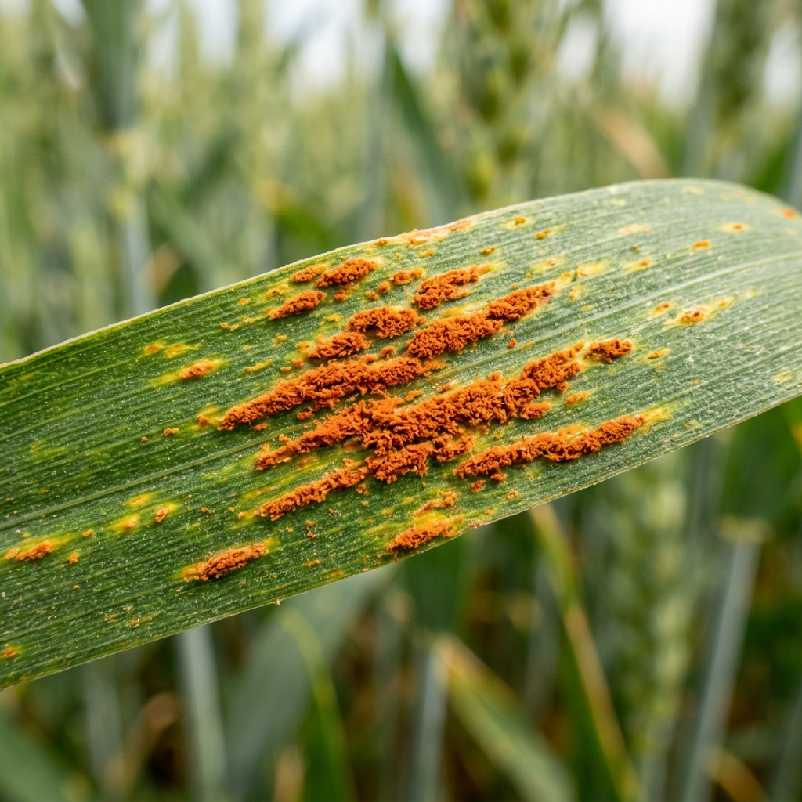

Wheat Leaf Rust
Small, circular, orange-red pustules on the upper surface of leaves. Rapidly reduces photosynthetic area.
Standard Tx: Triazole fungicides (Tebuconazole)
Organic Tx: Destroy volunteer wheat, plant resistant cultivars